충남대학교 컴퓨터공학과 이성호 교수님의 "프로그래밍 언어 개론" 강의를 필기한 내용입니다.
다소 잘못된 내용과 구어적 표현 이 포함되어 있을 수 있습니다.
First-class Function
- 함수를 값으로 취급해 변수에 저장하거나 인자로 저장, 반환값 등으로 사용할 수 있는 것
FVAE
- 일단 이름이 없는 함수(람다마냥)만 정의
- 그리고 Syntactic sugar를 이용해 이름이 있는 함수도 정의
Concrete Syntax
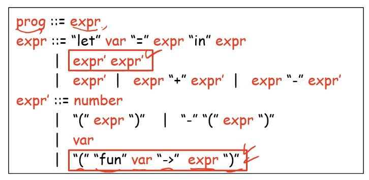
- (fun var → expr) 가 무명함수를 선언하는 부분
- expr’ expr’ 가 함수를 호출하는 부분
Abstract Syntax
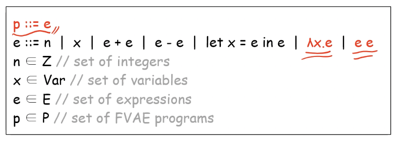
- 람다x.e 가 무명함수를 선언한다는 소리이고
- 저걸 lambda abstraction 라고 하고 더하기 빼기처럼 하나의 연산기호이다
- 파이썬에서 [lambda 매개변수 : 몸체] 이렇게 무명함수를 정의하는 것이 여기에서 착안한 아이디어이다
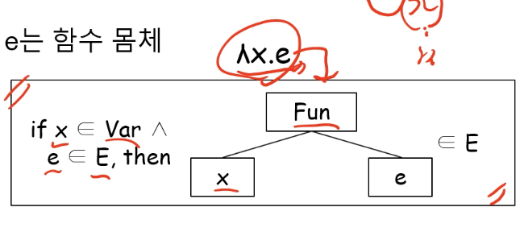
- 이런 AST로 나타내짐
- 당연히 x는 binding occurence이고 그의 scope는 e이다
- e e 로 함수를 호출하는 것
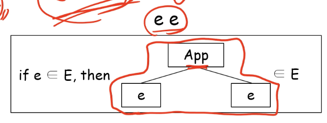
- 이런 AST를 가짐
값의 domain
- 이전까지는 정수만 ‘값’이 될 수 있지만
- 이제는 함수도 ‘값’이기 때문에 값의 범위를 확장시켜줘야 한다
- 그래서 이젠 값(Value) = 정수(Z) +D Closure로 정의됨
- 여기서 Closure라는 것은 (매개변수, 몸체, 함수 정의시점의 Store) 튜플 을 의미하는데 함수 정의시점의 Store도 갖고있는 이유는 Lexical scope에서도 전역변수의 scope는 함수 내부까지 들어오기 때문 이다
- 하지만 Lexical scope이기 때문에 전역변수가 아닌 외부의 지역변수는 내부에 들어오지 못한다
- 그리고 +D연산자는 도메인 간의 합 을 나타내며 ocaml에서 disjoint union과 동일하고 이 수업에서 정의한(통용되지 않는)연산자다 (합집합)
- 그리고 Value의 원소는 v, 정수(Z)의 원소는 n, Closure의 원소는 <ㅅx.e, 시그마> 로 표현한댄다
- 또한 이제 스토어에 저장되는 값이 정수가 아니라 값이기 때문에 기존의 정수만 저장하는 체제에서 수정해야 한다
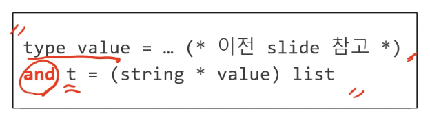
- 요래 바뀌드라
- 근데 저 and라는 놈은 OCaml에서 상호참조 를 지원해주기 위해 존재한다
- 저거를 나눠서 type 두개로 쪼갤 수 있지만 그렇게 하면 아래에서는 위의 타입을 사용할 수 있지만 위에서는 아래놈이 아직 선언되지 않은놈이기 때문에 참조할 수가 없음
- 따라서 이때에는 저 and를 사용해준다
- value는 스토어 t를 사용하고 t는 value를 사용하기 때문에 상호참조인데 그렇기 때문에 저 and를 사용해야 되는 거고 또한 Store.ml에 저장해야 되는 것
- 만약에 다른 파일에 선언하게 되면 순환참조(Circular Dependency), 즉, 서로가 서로를 참조해 그 loop를 빠져나오지 못하고 서로 계속 참조해 컴파일이 불가능한 경우가 발생한다
Semantic Relation
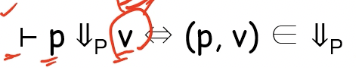
- 아래화살표 P는 프로그램p가 값v로 계산된다 는 의미
- v는 이제 정수뿐만이 아니라 함수도 포함하는걸로 확장된다
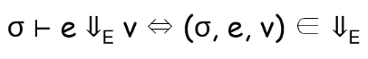
- 아래화살표E는 표현식e가 값v로 계산된다 는 의미
- 마찬가지로 정수뿐만아니라 함수까지 포함하는 v로 확장됨
- 저 아래화살표 사용할때 양쪽의 자료형 주의해야된다
- 그냥 계산된다고 아래화살표가 아니라 그 자료형으로 계산될때를 말하는거임
- 기말에서는 다 틀리게 할 거랜다
Bigstep Operational Semantics
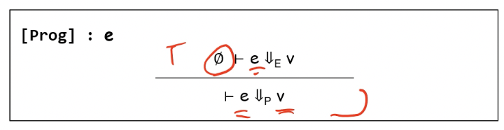
- 이제 프로그램의 결과는 정수 n이 아니라 값v로 확장됨
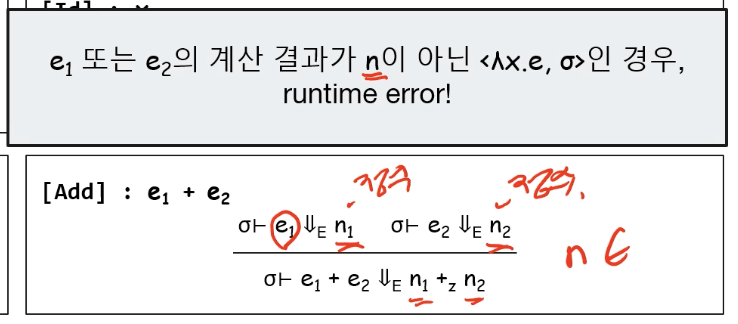
- e를 계산할 결과가 정수 n이어야 한다 : 함수 <ㅅx.e, 시그마> 라면 함수끼리의 덧셈은 존재하지 않기 때문
- 결과가 함수라면 Runtime error를 발생시킨다
- 따라서 Add할때 화살표 옆에다가 v쓰면 안된다!!
- 결과가 함수라면 Runtime error를 발생시킨다
- 뭔가 문제가 생겼을 때 인터프리터 입장에서는 exception인거고 프로그램 입장에서는 runtime error이다
- 둘이 다른것!!
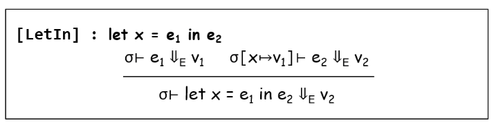
- LetIn의 경우에도 정수 n에서 값v을 지원하는 것으로 확장된다
- add나 sub과는 다르게 계산의 결과가 함수여도 된다는 것 에 주의할 것
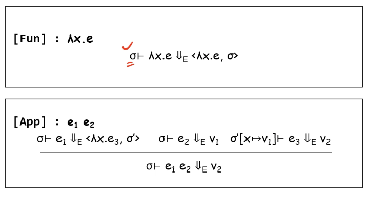
- 무명함수의 선언은 위와 같다
- 현재의 시그마에서 저런 함수 정의문이 나오면 (매개변수, 몸체, 시그마)의 튜플로 계산 이 되는 것
- 함수의 적용(apply)는 그 아래와 같다
- 현재의 시그마에서 e1이 (x, e3, 시그마’)으로 계산이 되고 e2가 v1으로 계산되며 x가 v1으로 계산되는 새로운 시그마(매개변수의 값이 업데이트된 새로운 시그마)에서 e3을 계산한 결과가 v2이면 e1 e2는 v2로 계산이 되는 것
- 여기서 중요한 것은 시그마가 시그마’으로 바뀌는 건데 이는 함수 선언 시점에의 시그마 이기 때문에 그렇다
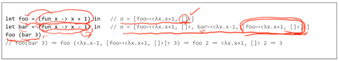
- 여기서 보면 첫번째 foo에서는 빈 메모리가 튜플의 세번째 원소로 들어가는 반면에 두번째 bar에서는 foo가 추가된 메모리가 튜플의 세번째 뭔소로 들어가는 것을 알 수 있다
- proof tree 시험에 반드시 낸댄다 → semantics 옆에 두고 같이 보면서 pdf예시들 다 그려봐야 된다
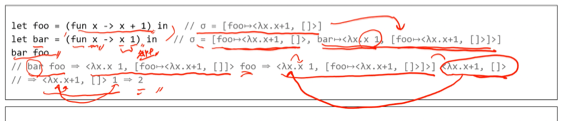
- 이거 화살표 따라 가면서 이해하고 proof tree까지 다 그려보고 모르겟으면 강의 50분경 확인해라
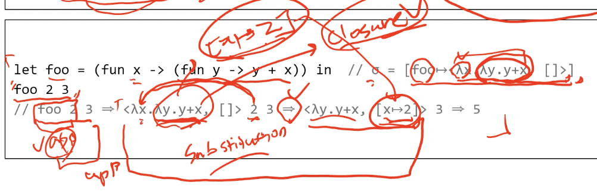
- 여기서
<ㅅy.y+2, []>가 아니라<ㅅy.y+x, [x → 2]>인 이유는 저ㅅy.y+x가 선언될 당시에는 매개변수x에 2가 매핑되기 때문에 x → 2가 선언될 당시에의 시그마 이므로 저래되는거다 - 이 예시 시험에 나올거같다
Lexical scope vs Dynamic scope
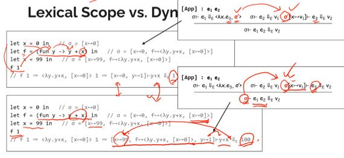
- 이 예시 proof tree그려서 꼼꼼하게 분석해라
- 그냥 시그마냐 시그마’냐 구별 잘해야 된다
Syntactic sugar를 이용한 Named function의 지원
- Syntactic sugar이기 때문에 AST는 수정할 필요 없이 Concrete syntax와 parser만 수정하면 된다
Syntactic sugar를 이용한 Multiple parameter의 지원
- 여러개의 인자를 받는 함수를 syntactic sugar로 표현하는 것은 curried form 을 이용하면 된다
- 인자 하나를 넣고 함수 반환하고 또 그거에 인자 하나 더 넣고 또 함수 반환하고 이런식으로 연쇄적으로 계산해서 모든 인자에 대해 계산하는 것
Syntactic sugar를 이용한 LetIn의 지원
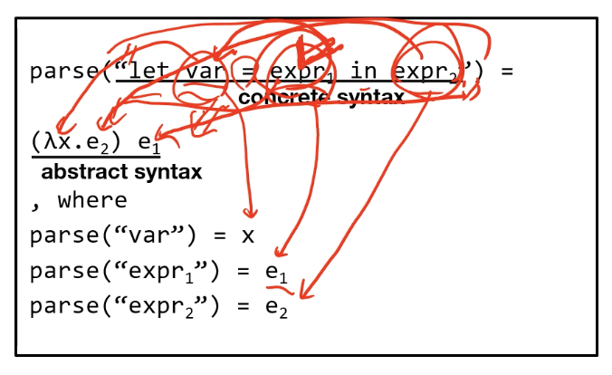
- 이런식으로 할 수도 있다!
- in뒤에 나오는 놈이 제일 나중에 연산된다는 것과 함수의 몸체는 제일 나중에 연산된다는 것에 착안해 in뒤에있는놈을 함수의 몸체로 두고, LetIn의 변수명을 매개변수명으로 하고 이 함수를 e1에 대해 apply되게 해 자연스레 e1의 결과가 매개변수에 들어가고 그것으로 e2를 계산하는 동일한 흐름이 완성된다
Function Application
- 함수형 프로그래밍에서는 function call 대신 function application라고 부른다
- 뭔말인고 하니 함수형이 아닌 언어에서는 ‘함수 f가 인자 x로 호출된다’라고 표현되지만 함수형 언어에서는 함수 f가 인자 x에 apply된다이렇게 표현한다
- 함수형 언어가 아닌 언어에서는 그냥 함수에 인자를 넣어서 호출하는거지만 함수형 언어에서는 함수 또한 값이기 때문에 호출이라는 말을 안쓰고 인자에 apply된다 라는 말을 쓰는 것
- 어떤 값에 적용된다? 정도로 생각하면 될듯
함수형 언어는 정의가 간결하다
- 함수를 값으로 취급하는 것은 매우 강력한 기능이며
- 함수와 그의 적용으로 대부분의 동적을 수행할 수 있다
- 따라서 AST, semantics, interpreter를 모두 간결하게 짤 수 있음
- 하지만 이 모든것들을 그냥 냅둔다면 프로그래머는 이 모든 기능을 함수와 그의 적용으로만 구현해서 사용해야 되기 때문에 Syntactic sugar를 이용해 표현력을 확장시킨다
- 즉, 프로그래머가 Syntactic sugar을 이용한 표현을 쓰면 그것을 함수와 그의 적용으로 인터프리터가 바꿔서(Desugaring) 인터프리트 하는 기법을 사용